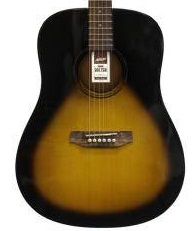
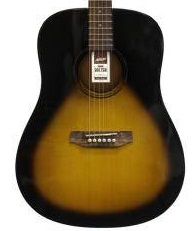

Guitarra acustica ibanez
 

La guitarra acústica Ibanez con acabado en degradado negro es perfecta para músicos que buscan un instrumento con un diseño único y un sonido excepcional. Este modelo combina estilo y calidad, ideal para cualquier situación musical.
- Cuerpo de madera sólida con un impresionante acabado en degradado negro
- Tono cálido y resonante, adecuado para una amplia gama de géneros musicales
- Mástil de caoba con diapasón de palisandro para una mayor comodidad y facilidad de uso
- Roseta decorativa y golpeador elegante que complementan su estética sofisticada
- Clavijero de afinación precisa para asegurar un tono perfecto durante tus presentaciones